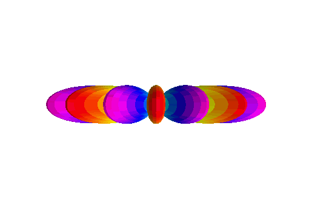

Project 2: Spherical Harmonics¶
Quick Scrolling¶
Description¶
A few functions are made for plotting/visualizing spherical harmonics.
Methodology¶
We use sph_harmonics.BibicallyAccurateSphericalHarmonics to plot 3D spherical harmonics.
The convenience function sph_harmonics.imageCropper is included to crop off excess fat from the images
generated by matplotlib.
An example is below for l=26, m=13
# Lets make a nice plot of our favorite spherical harmonic function.
l=26
m=13
elev = 25
azimRot = 45
nangles = 600
dpi=250
# Plot and save
BibicallyAccurateSphericalHarmonics(l=l, m=m, sphType='real', nangles=nangles, elev=elev, azimRot=azimRot, dpi=dpi, filename='L26_m13.png', doPlot=True)
# Crop image for convenience.
imageCropper(filename='L26_m13.png', outname='L26_m13.png', left_inches=0.5, right_inches=0.4, top_inches=1.2, bottom_inches=1.15, dpi=dpi)

We can also make a number of images and turn them into a gif using sph_harmonics.gifMaker. Simply gather an ordererd list of filenames you want to turn
into a gif and then run gifMaker()
An example is provided below. In this case we take many snapshots of different angular rotations to envision the function rotating in space!
# Lets make a gif (do not run high dpi or high nangles unless you value your time)
from IPython.display import Image
l=1
m=0
nangles = 25
dpi=50
nFrames = 200
# vary the angles
elev_angles = np.linspace(0, 2*np.pi, nFrames) * 360 / 2.0 / np.pi # 1 full 360 degree rotation
azim_angles = np.linspace(0, 2*np.pi, nFrames) * 360 / 2.0 / np.pi # 1 full 360 degree rotation
filename_list = []
for i, _ in enumerate(elev_angles):
# Make filename
# !!! make sure the folder L1_M0_GIF exists before running !!!
filename = './L1_M0_GIF/'+str(i)+'.png'
# Generate a snapshot and save it
BibicallyAccurateSphericalHarmonics(l=l, m=m, sphType='real',
nangles=nangles, elev=elev_angles[i], azimRot=azim_angles[i],
dpi=dpi, filename=filename,
doPlot=False)
# Crop some fat off the image
imageCropper(filename=filename, outname=filename, left_inches=0.5, right_inches=0.4, top_inches=1.2, bottom_inches=1.15, dpi=dpi)
# Append filename
filename_list.append(filename)
# Make a cute little gif of our function rotating :)
gifMaker(output_filename='./L1_M0_GIF/L1_M0.gif', duration=5, filenames=filename_list)
# Display gif:
Image(url='./L1_M0_GIF/L1_M0.gif')
Results¶
Some fun spherical harmonics from Question 1 are plotted here:
\(Y_1^1(\theta, \varphi)\):

\(Y_1^0(\theta, \varphi)\):
{kind=link}
\(Y_1^{-1}(\theta, \varphi)\):

And some even more fun ones …
\(Y_2^1(\theta, \varphi)\):

\(Y_6^3(\theta, \varphi)\):

\(Y_7^7(\theta, \varphi)\):
{kind=link}
\(Y_{10}^2(\theta, \varphi)\):

\(Y_{10}^6(\theta, \varphi)\):

Jupyter Notebook¶
A Jupyter notebook is given for the Spherical Harmonics work HERE
Classes¶
- Classes and methods developed in this work:
Plotter for the spherical harmonic shapes:
sph_harmonics.BibicallyAccurateSphericalHarmonicsGif maker:
sph_harmonics.gifMakerImage cropper:
sph_harmonics.imageCropperSpherical harmonic animator from Dr. Kotlyar:
sph_harmonics.animateSphHarmFunction for getting spherical harmonics from Dr. Kotlyar:
sph_harmonics.getSphHarmFunction for plotting spherical harmonics on a unit sphere from Dr. Kotlyar:
sph_harmonics.plotSphHarm